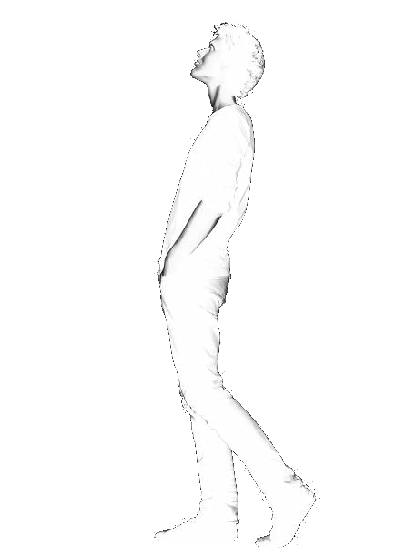
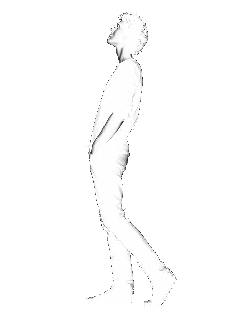
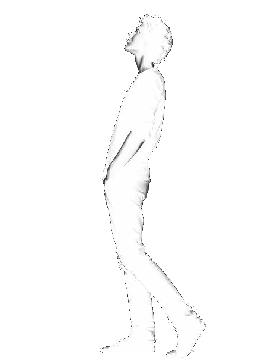

CoachConnorB
Programmer. Creator. Grappler.
 Projects

Biography
Projects

Biography
 Contact Me
Contact Me
Programmer. Creator. Grappler.
Projects

Biography
Contact Me

Just like this man, I'm always looking for new perspectives and opportunities to learn and grow. I'm a problem-solver and lifelong learner.

Adaptability is my strength. Like the snake, I'm quick to adapt to new technologies and challenges in the tech world.

Exploring uncharted territory, I enjoy building innovative solutions in mobile and web development, much like discovering alien worlds!

Big challenges excite me! Whether it's building apps, designing systems, or solving tough problems, I embrace the explosion of possibilities.

A rare find! Just like Sasquatch, I aim to stand out with creative, impactful projects that leave a lasting impression.